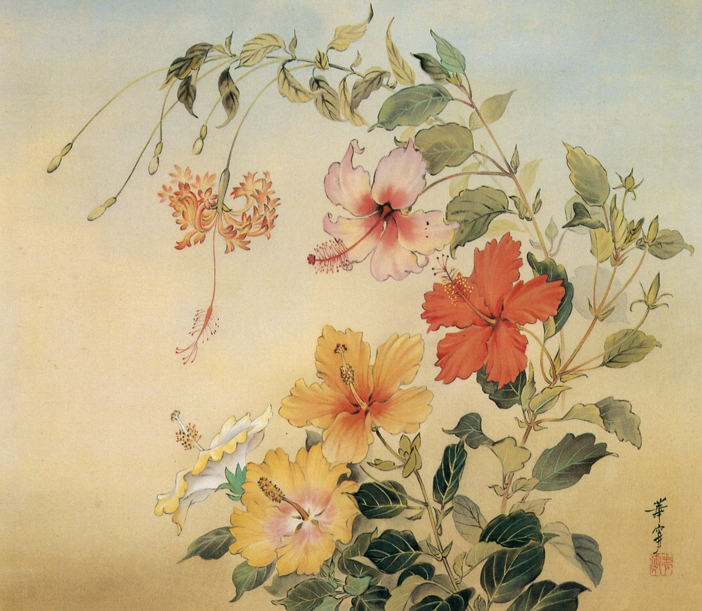

作品名 「ハイビスカス」
花言葉 「新しい恋」「繊細な美」
ハイビスカス
「新しい恋」
日本では、そのなかでも熱帯および亜熱帯性のいくつかの種がとくに「ハイビスカス」と呼ばれ、南国のイメージをまとった植物として広く親しまれている。ハイビスカスは、一日だけ咲いてその日のうちに枯れてしまう一日花で、日当たりのよい場所では次々とつぼみをつけて咲き続けます。花言葉の「新しい恋」「常に新しい美」は、ハイビスカスが毎日新しい花を咲かせることに由来するといわれます。
ハイビスカス
高畠華宵
高畠華宵（たかばたけ かしょう）は大正ロマンを代表する挿絵画家。人物画を中心に描いた作家。連載小説の挿絵・雑誌口絵・レターセットなどの小物の意匠などに使われた。独特の三白眼を有する、無国籍風な表情と中性的な雰囲気をもつ人物を描く。妖艶さと清楚さを併せ持つ少女画・美人画と、凛々しく潔い、しかしやはりどこか色香を漂わせる少年画はいずれも一目で彼の作品とわかるほどの個性を放っている。
| 作品名 | ハイビスカス |
| 作者 | 高畠華宵 |
| 制作年 | 1990年 『高畠華宵大正ロマン館 図録』に掲載 |